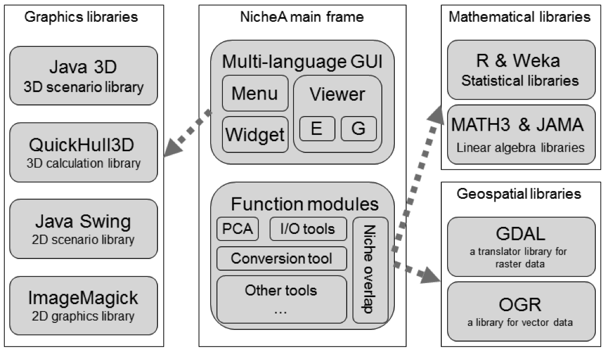
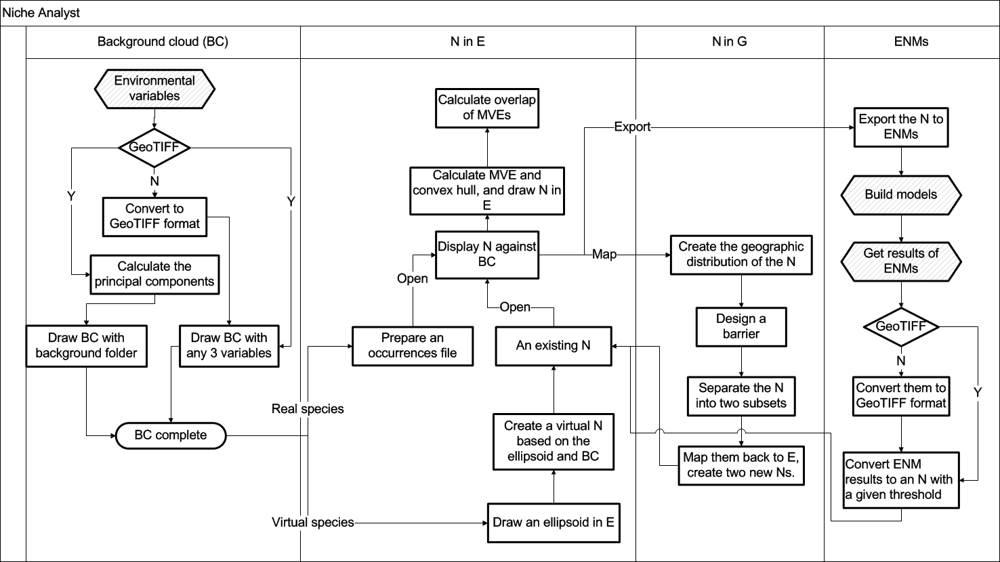

What is Niche Analyst (NicheA)?
Niche Analyst (NicheA;http://biodiversity-informatics-training.org/software-data-sources/ nichea/) is an open-source, cross-platform application released under a GNU Public License (GPL). NicheA is written in Java, combining several toolkits, such as R (R Development Core Team 2011), Weka (Hall 2009), JAMA (Hicklin et al. 2012), GDAL (GDAL Development Team 2011), and QuickHull3D (Lloyd 2012; Fig. 1). The platform is a window-based, user-friendly application that executes on most common operating systems, including Microsoft Windows, Mac OS X, and some Linux releases, such as Ubuntu.
Users can use NicheA (1) to display E spaces of raw environmental data or transformed principal component dimensions, (2) visualize species’ distributions in linked E and G spaces, (3) design barriers to dispersal in G, (4) estimate and display Grinnellian niches in E, (5) map objects between G and E, along with additional functions. Fig. 2 illustrates functions and feasible action flows in NicheA. NicheA can also import and display results of widely-used ENMs, and export Ns in formats compatible with various ENM platforms.
Figure 1. The software architecture of NicheA. NicheA is a multi-language, GUI-based application that invokes four graphics libraries to implement user interactions. Function modules handle messages sent from the GUI, invoke libraries to complete calculations, and return results to the GUI.

Figure 2. Feasible action flows in NicheA. Four function modules in NicheA: (1) The left block is the workflow for creating and displaying a BC with environmental layers supplied by the user. (2) The second block shows generation of Ns, displaying them in E, and computing their attributes. (3) The third block shows a simple function used to design barriers for Ns in G. (4) The final block contains processes for interacting with other ENM algorithms.
